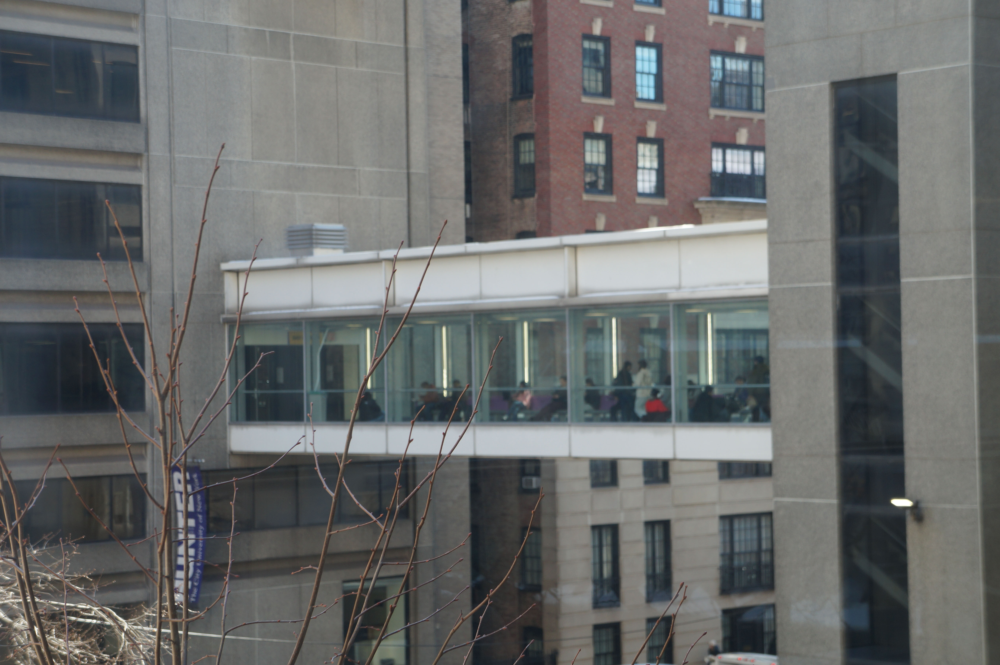
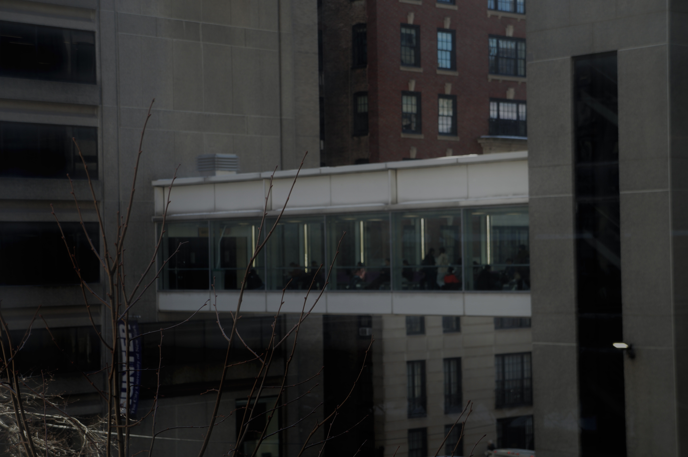

Shallow DOF


This image demonstrates the shallow depth of field created in-camera. The main subject is sharp and clearly defined
Deep DOF


This image demonstrates the deep depth of field created in-camera. Both the subject and much of the surrounding environment remain in focus.


This image demonstrates a shallow depth of field effect created in Photoshop using the Field Blur tool.